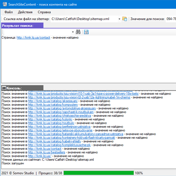
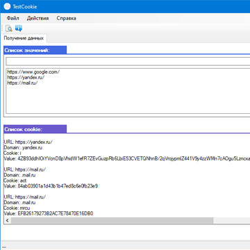
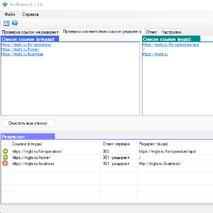

Программное обеспечение:

FastADB
Данная программа позволяет работать с Android Debug Bridge более удобно и быстрее. С помощью этой программы вы легко сможете снимать логи и скриншоты с устройства, устанавливать и удалять приложения, производить стресс-тестирвоание, и многое другое.

DetectGaYm
Программа тестирования событий Google analytics и Yandex metrika.
Данная программа позволяет проверить события Google analytics и Yandex metrika в момент отправки данных из web форм. Для создания автотестов в json формате встроен удобном редакторе который так же позволяет легко их воспроизводить. Программа портативная и кроссплатформенная.
Данная программа позволяет проверить события Google analytics и Yandex metrika в момент отправки данных из web форм. Для создания автотестов в json формате встроен удобном редакторе который так же позволяет легко их воспроизводить. Программа портативная и кроссплатформенная.


TestSitemap
Программа предназначена для тестирования ссылок прописанных в файле sitemap.
Программа циклично проходит по всем ссылкам и получает статус страницы. Если статус не равен 200 (успешно) данная ссылка попадет в список ошибок.
Программа циклично проходит по всем ссылкам и получает статус страницы. Если статус не равен 200 (успешно) данная ссылка попадет в список ошибок.



JsonFileEditor
Программа предназначена для редактирования json файлов.
В данной программе используется дерево объектов для навигации, текстовое поле для общего представления содержания файла, таблица для непосредственного редактирования данных в json файле.